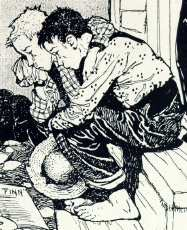
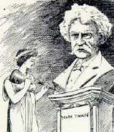

from Denver Post

from The Denver Post

from Los Angeles Daily Times
- Baltimore Sun (22 April 1910)
- New York Times (22 April 1910)
- New York American (22 April 1910)
- Boston Daily Globe (22 & 23 April 1910)
- Los Angeles Times (22 April 1910)
- Richmond Times Dispatch (22 April 1910)
- Atlanta Constitution (22 April 1910)
- Chicago Daily Tribune (22 April 1910)
- Colorado Springs Gazette (22 April 1910)
- Cleveland News (22 April 1910)
- Washington Post (22 & 24 April 1910)
- Spokane Spokesman-Review (22 April 1910)
- Charleston News & Courier (22 April 1910)
- Virginia City Daily Territorial (22 April 1910)
- Indianapolis News (22 April 1910)
- Seattle Post-Intelligencer (22 April 1910)
- San Francisco Examiner (22 April 1910)
- St. Louis Post-Dispatch (22 April 1910)
- Vicksburg Evening Post (22 April 1910)
- Kansas City Star (22 April 1910)
- Hartford Courant (22 April 1910)
- Wilmington Morning Star (22 April 1910)
- Pawtucket Daily Times (23 April 1910)
- Minneapolis Morning Tribune (23 April 1910)
- Detroit Free Press (23 April 1910)
- San Francisco Call (23 April 1910)
- New York World (23 April 1910)
- Denver Post (24 April 1910)